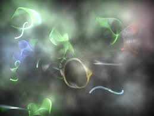

Essencialmente, um buraco negro é um monte de coisa que está presa em um espaço tão pequeno que nada pode sair, nem mesmo a luz. Os buracos negros surgem a partir de estrelas moribundas, que explodem no final da vida. Depois de consumirem todo o seu combustível, sofrem um colapso gravitacional interno. O que resta delas é transformado em um objeto super compacto do qual nem a luz consegue escapar.
A Terra pode ser engolida por um buraco negro?
A resposta curta é sim, poderia acontecer. Mas é muito improvável, e teríamos alguns avisos antes que algo realmente ruim acontecesse. Ainda que considerada uma hipótese pouco provável, "a Terra poderia ser lançada no centro da galáxia, perto o suficiente do buraco negro supermassivo", disse o astrofísico da Universidade de Yale, Fabio Pacucci, em uma palestra no TED. Porém, caso acontecesse de fato, o resultado não é apenas um alongamento do corpo em geral, mas também uma compressão no meio. Portanto, seu corpo ou qualquer outro objeto, como a Terra, começaria a parecer espaguete muito antes de chegar ao centro do buraco negro.
O que há dentro dos buracos negros?
Dentro dos buracos negros há tudo o que entrou nele. O problema é que não se sabe em que estado as coisas estão lá dentro. Mas se fosse possível chegar e entrar em um desses buracos, o que veríamos? Bem, tudo nesse tópico são apenas teorias, porém uma das possibilidades é 'a muralha de fogo' que, como o nome sugere, é um bando de partículas em chamas que iria fritá-lo como uma batata, por exemplo. Loucura, né?
Buraco Negro registrado pela Event Horizon Telescope, em 2019.
Teoria das cordas: explicando o inexplicável?
Publicado no dia 24 de Setembro de 2025
O que é a teoria das cordas?
A teoria das cordas propõe que os constituintes fundamentais da matéria não são partículas pontuais, mas sim minúsculas e vibrantes cordas unidimensionais, cujas diferentes vibrações geram todas as partículas elementares e forças conhecidas no universo, funcionando como diferentes "notas" de uma mesma "corda cósmica". O objetivo da teoria é unificar a física quântica e a relatividade geral, mas ainda carece de comprovação experimental.
Quais seriam as implicações da teoria das cordas?
A veracidade da teoria das cordas implicaria na existência de múltiplas dimensões espaciais (mais do que as três que percebemos), a unificação de todas as forças fundamentais da natureza através das vibrações de "cordas" e a possibilidade da existência de universos paralelos (o multiverso), além de oferecer um quadro teórico para a natureza fundamental da matéria e do espaço-tempo. No entanto, a teoria ainda enfrenta desafios significativos, como a dificuldade de comprovação experimental devido às dimensões extra e à escala minúscula das cordas, e a necessidade de ajustar suas previsões à realidade observada.
Existem outras teorias que tentam explicar a origem de tudo?
Bem... Sim!! existem sim outras teorias buscando solucionar esse grande mistério. As alternativas mais conhecidas incluem a Gravidade Quântica em Loop (LQG), que propõe um espaço-tempo discreto em vez de contínuo, e a Teoria da Triangulação Dinâmica Causal, que usa símplices para modelar a evolução do espaço-tempo. Outras propostas incluem a Gravidade Assintoticamente Segura, que busca estabilizar as constantes de acoplamento em altas energias, e a Teoria M, que é uma unificação das próprias teorias das cordas. Curioso, não?

A teoria das cordas é um dos maiores mistérios da ciência moderna!